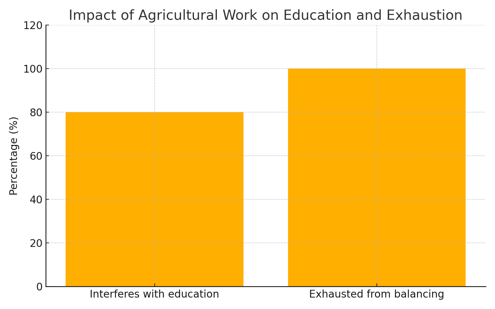
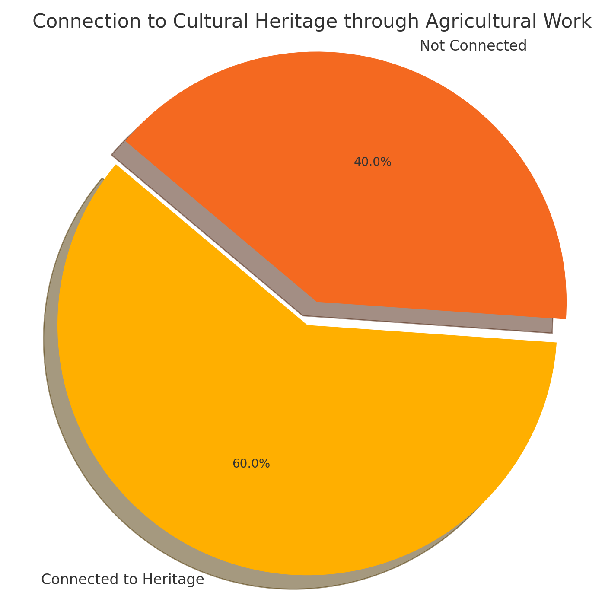
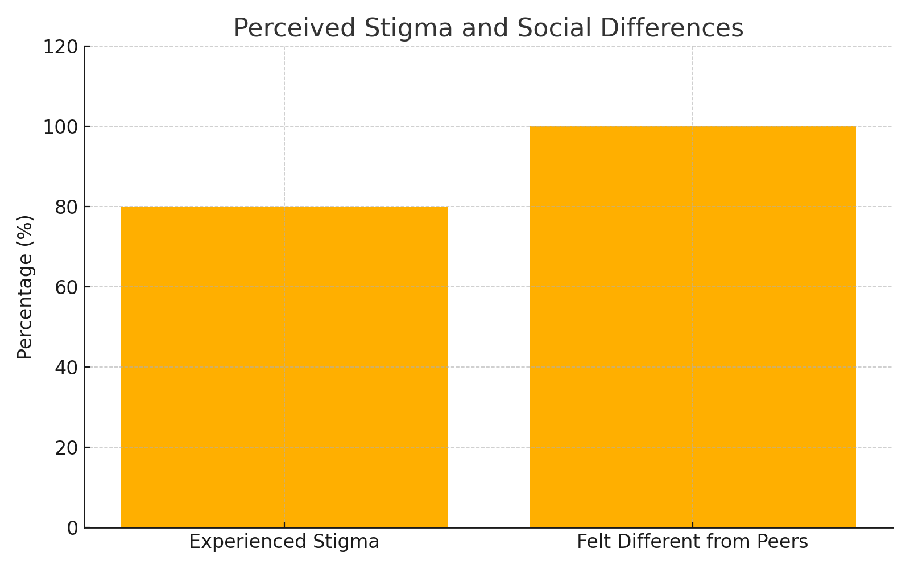
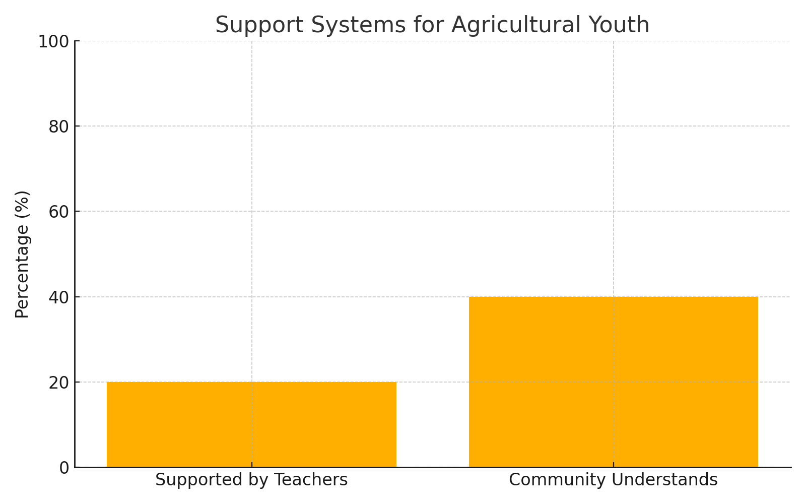
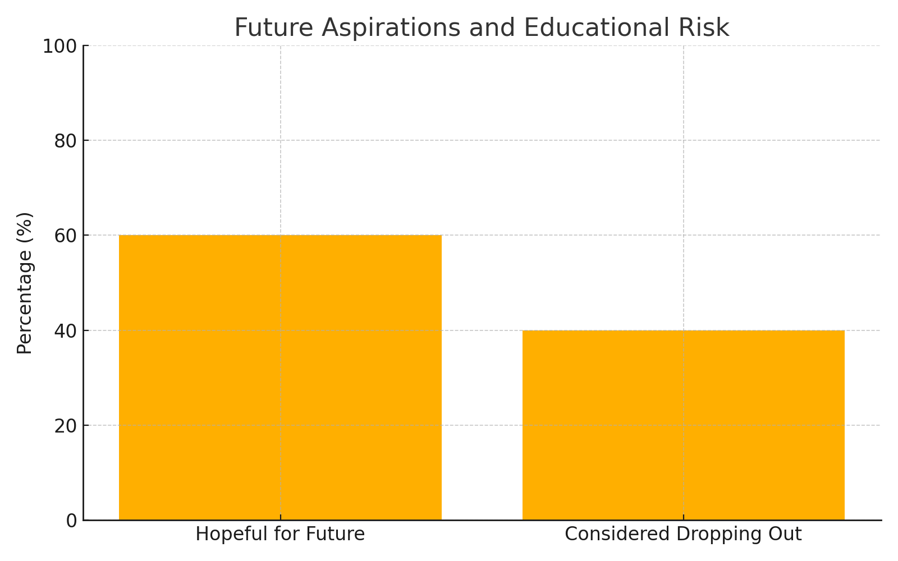

Author Details
Bianca Zelaya
University of South Florida
Biomedical Sciences, Minor in Psychology
Author bio: Bianca Zelaya is a student at the University of South Florida majoring in Biomedical Sciences with a minor in Psychology.
LinkedIn: https://www.linkedin.com/in/bianca-zelaya-bb2465275/
Purpose Statement
Agricultural labor has historically served as the backbone of many communities, especially those populated by migrant families. In Homestead, Florida, agricultural work has not only provided livelihoods but has also shaped the social and cultural identities of families engaged in it. For younger generations, however, this legacy can represent more than economic survival. It can also create psychological, educational, and social challenges. Children of agricultural workers may face pressures related to disrupted education, stigmatization, family responsibility, and the emotional weight of their families’ sacrifices.
This study examines the ways agricultural labor influences the personal identities and life trajectories of teenagers in Homestead. By combining statistical data with personal narratives, the study seeks to highlight emotional and social burdens that can be overlooked when agricultural labor is discussed primarily in economic or logistical terms. The central goal is to better understand how family history, work responsibilities, cultural identity, school experiences, and future aspirations interact in the lives of young people connected to agricultural labor.
Literature Review
Many teenagers begin working as a way to earn spending money, save for future goals, or gain experience. In other cases, however, teenagers work because their income contributes directly to their own living expenses or the needs of their families. Work can play an important role in adolescent development by encouraging responsibility, self-reliance, interpersonal skills, and participation in the larger community (National Research Council & Institute of Medicine, 1998).
Adolescence is also a period in which young people begin taking on roles associated with adulthood. Development during this stage often includes greater independence, stronger interpersonal skills, and a growing ability to participate effectively in social environments. Employment can support those developments, but it can also create strain when work responsibilities interfere with education, rest, relationships, or other developmental opportunities.
For migrant youth, work may be experienced less as an optional opportunity and more as a family obligation. Dreier and Luce (2023) documented cases in which migrant children in the United States worked demanding jobs while living with relatives or other adults. Historical research also shows that child labor among immigrant families is not a new phenomenon. Gratton and Moen (2004) examined child labor among immigrant communities in the United States between 1880 and 1920, demonstrating how economic necessity, family structure, and immigration shaped children’s participation in work.
These patterns are relevant to the present study because the responsibilities associated with agricultural labor may affect not only income but also how young people understand themselves, their families, and their futures.
Dehumanization of Immigrants
Immigrants often leave their countries of origin in search of safety, economic stability, education, or better opportunities for themselves and their families. Yet immigrant communities may also face discrimination, stigmatization, and dehumanizing treatment. Markowitz and Slovic (2021) examined the dehumanization of immigrants in the United States, while Phillips (2025) describes dehumanization as a process in which people are regarded or treated as less than fully human.
The political and social climate surrounding immigration can therefore influence how immigrant families experience belonging in the United States. U.S. policy toward Latin America and immigration has changed significantly across time, including through developments such as the Immigration and Nationality Act of 1965 and later changes to immigration enforcement and citizenship policy (Agarwal-Harding, 2025; Garcia, 2016).
Recent political rhetoric and policy have also contributed to heightened public debate about immigration. Reporting cited in this paper describes rhetoric in which immigrants have been discussed in criminalizing or dehumanizing terms (Contreras & Lotz, 2025; The Washington Post, 2024). In 2025, additional federal actions altered immigration enforcement priorities, asylum and humanitarian programs, and policies related to citizenship and deportation (Center for Migration Studies of New York, 2025; Lahoud, 2025; The White House, 2025).
For communities such as Homestead, Florida, where many families have long histories connected to agriculture and migration, these broader political conditions may affect feelings of security, belonging, and social identity. The agricultural legacy is therefore not solely a history of work. For some families, it is also a history of survival, sacrifice, resilience, and cultural pride.
Gap in the Research
Existing research provides important information about the economic and logistical challenges of agricultural labor, but the personal effects on teenagers can receive less attention. These effects may include psychological stress, cultural identity, academic performance, stigma, family expectations, and future aspirations.
This study addresses that gap by focusing on the experiences of younger people connected to agricultural labor in Homestead. Their personal narratives are considered alongside survey data in order to better understand how agricultural work may influence identity, education, relationships, and long-term goals.
Methodology
This study used a mixed-methods design to examine how farm labor affects the individual, psychological, and social identities of young people growing up in Homestead, Florida. The study combined qualitative interviews with quantitative survey data in order to capture both measurable patterns and lived experiences.
Five semi-structured interviews were conducted with individuals who either worked in agriculture themselves or had a family member working in the industry. The interviews focused on personal experience, family expectations, cultural identity, educational aspirations, social relationships, and emotional stress. Open-ended questions were used so participants could describe their experiences in their own words.
Examples of the interview questions included:
“What does agricultural work mean to you and your family?”
“How has your family’s participation in agriculture affected your education and career aspirations?”
“What challenges or advantages have you personally faced due to agricultural labor?”
“Do you feel pressure to remain in agricultural work, or do you envision other career options?”
“How does working in agriculture influence your capacity to participate in school and social activities?”
A standardized questionnaire was also distributed to a larger sample of youth and adults in the Homestead community. The survey collected self-reported information related to work experience, school performance, cultural identity, social support, and mental health. The questionnaire used a Likert-style response format to identify broader patterns in participants’ experiences. Survey data were summarized using descriptive statistics.
Because the study used a small local sample, its findings should be interpreted as exploratory rather than representative of all migrant youth or agricultural workers.
Ethical Considerations
Because the research focused on potentially sensitive experiences, participant confidentiality and voluntary participation were treated as important considerations. The study design specified that identifying information such as names and immigration status should not be recorded. Participants were to be informed of the purpose of the study, possible risks, and their right to withdraw at any time. For minors, parental or guardian consent was required.
Participants could also decline to answer questions they found uncomfortable. Research materials were intended to be available in both English and Spanish when needed. The study protocol was designed to follow ethical principles associated with research involving human participants.
Interview Questions and Analytical Focus
The interviews centered on participants’ experiences with agricultural work and the ways those experiences influenced their personal and social identities. Questions focused on balancing school, work, and personal life; family expectations; cultural identity; social relationships; perceived stigma; school support; and future career aspirations.
Participants were also asked how agricultural work affected the way they viewed themselves compared with other teenagers, whether they felt pressured to remain in agricultural work, and whether they believed their experiences would shape their future goals.
Findings and Discussion
Five broad themes emerged across the five interviews: balancing work and school, identity shaped by family legacy, perceived stigma, support systems, and future aspirations. Although the specific circumstances varied by participant, these themes appeared repeatedly in the interviews.
| Theme | Description |
|---|---|
| Balancing Work and School | Participants described difficulty managing school responsibilities alongside agricultural work. |
| Identity Shaped by Family Legacy | Participants frequently described a strong connection to their families’ histories of agricultural labor. |
| Perceived Stigma | Participants described feeling underestimated or judged because they were associated with farm work. |
| Support Systems | Participants reported varying levels of support from teachers, school staff, and the broader community. |
| Future Aspirations and Career Outlook | Participants expressed mixed feelings about future careers, education, and whether they would remain in agriculture. |
These themes illustrate how agricultural labor can function as a double-edged legacy. For some participants, it encouraged values of hard work, perseverance, family responsibility, and cultural pride. At the same time, agricultural work also created educational strain, social stigma, exhaustion, and pressure related to family expectations.
| Participant | Summary | Themes Present |
|---|---|---|
| Participant 1 | Struggled to balance school and agricultural work, reported limited support from teachers and peers, and felt pressure to continue the family’s agricultural work. | Balancing Work and School; Family Expectations; Stigma |
| Participant 2 | Expressed pride in the family’s agricultural history but also described isolation caused by long work hours and uncertainty about pursuing a different career. | Identity Shaped by Family; Isolation; Future Aspirations |
| Participant 3 | Described significant mental health strain related to work responsibilities, considered dropping out of school, and reported little support from school staff. | Mental Health; Lack of Support; Future Aspirations |
| Participant 4 | Valued the work ethic developed through agriculture but disliked the social stigma attached to farm work. | Work Ethic; Stigma; Social Isolation |
| Participant 5 | Felt strongly connected to cultural heritage through agricultural work but wanted more opportunities to explore careers outside agriculture. | Cultural Heritage; Career Aspirations; Future Opportunities |
Balancing Work and School
Survey and interview findings indicated that agricultural work affected participants’ ability to manage educational responsibilities. Eighty percent of survey respondents reported that work interfered with education, while 100% reported feeling exhausted from balancing work and school requirements.

Interview responses supported this pattern. Participants described long work hours and physical exhaustion as barriers to academic performance. Unlike teenagers who may work primarily for spending money or experience, some participants described work as directly connected to family financial needs.
This responsibility could lead young people to make tradeoffs involving extracurricular activities, advanced classes, leadership opportunities, study time, or social activities. Participants also described feelings of guilt when school responsibilities competed with family work obligations. The result was not only academic pressure but also an emotional conflict between personal aspirations and the expectation to contribute to the family.
Family Heritage Shaping Identity
Despite the challenges associated with agricultural labor, participants also described a strong connection to their families’ farming histories. Sixty percent of respondents reported feeling connected to their cultural heritage through agricultural work.

Participants described farm work as a source of work ethic, perseverance, and family pride. Agricultural labor often represented the sacrifices made by parents and grandparents in order to create opportunities for younger generations.
At the same time, some participants experienced tension between honoring that family history and pursuing careers outside agriculture. Wanting a different future could sometimes feel like distancing themselves from the sacrifices of previous generations. In this sense, agricultural labor shaped identity in two directions at once: it could provide a strong sense of pride and belonging while also creating pressure about what participants owed to their families.
Perceived Stigma
Participants also reported stigma associated with agricultural labor. Eighty percent reported experiencing discrimination or stigma, while 100% reported feeling different from peers who were not involved in agricultural work.

Interview responses suggested that some participants feared being judged, mocked, pitied, or underestimated when classmates learned about their work. Agricultural labor could be viewed positively within the family while being treated as low-status work by peers or others outside the agricultural community.
This contrast may contribute to social isolation. Some participants described avoiding conversations about their work because they did not want classmates to make negative assumptions about their intelligence, ambitions, or social status. Repeated experiences of stigma may also affect self-esteem and belonging within the school environment.
Support Systems
Support from teachers and the broader community was another major theme. Only 20% of respondents reported feeling supported by teachers in managing work and school responsibilities, while 40% felt that their broader community understood their agricultural work experiences.

Interview responses suggested that school staff did not always recognize the responsibilities students carried outside the classroom. Participants described situations in which teachers appeared unaware of or unresponsive to work obligations.
At the same time, supportive adults could have a meaningful effect. Participants indicated that understanding from a teacher or staff member could help them stay motivated and engaged in school. Flexible deadlines, tutoring, counseling, mentorship, and greater awareness of students’ work responsibilities may help reduce some of the pressure described by participants.
Career Prospects and Future Plans
Despite the difficulties associated with agricultural work, many participants expressed hope for futures beyond farming. Sixty percent reported feeling hopeful about opportunities outside agricultural labor, while 40% reported having considered dropping out of school because of work responsibilities.

Participants described a wide range of possible careers, including health care, teaching, business, the arts, skilled trades, journalism, and entrepreneurship. These aspirations reflected both personal goals and a desire to create greater financial stability for their families.
Participants also recognized barriers that could make those goals difficult to achieve. Economic instability, immigration-related concerns, limited access to college resources, and demanding work responsibilities were all described as potential obstacles. The fact that participants could feel hopeful about their futures while also considering leaving school demonstrates the tension between long-term aspirations and immediate responsibilities.
For many participants, pursuing a career outside agriculture did not mean rejecting their families’ histories. Instead, it represented an effort to build on the sacrifices of previous generations and expand what success could look like for the future.
Conclusion and Implications
The legacy of agricultural labor continues to shape the social and cultural identities of young people in Homestead in complex ways. Participants described strong family ties, cultural pride, resilience, perseverance, and a powerful work ethic. They also described exhaustion, academic pressure, social stigma, limited support, and tension between family responsibilities and personal goals.
The findings suggest that identity formation among young people connected to migrant agricultural labor is not simply a choice between accepting or rejecting family tradition. Instead, participants often balanced pride in their heritage with a desire for greater educational and career opportunities.
Schools and community organizations may be able to reduce some of these pressures by providing more flexible academic support, culturally responsive counseling, tutoring, mentoring, and greater awareness of students’ responsibilities outside school. Teachers and staff may also benefit from recognizing that work obligations can be largely invisible within the classroom.
The experiences described in this study suggest that agricultural labor influences more than employment or family income. It can also affect belonging, self-concept, education, relationships, and the way young people imagine their futures. Understanding these experiences may help educators, researchers, and community organizations better support young people from agricultural families.
Limitations
This study has several important limitations. First, the small sample size of five qualitative interviews and 20 surveys limits the ability to generalize the findings to the larger population of migrant youth or agricultural workers.
Second, the study relied on self-reported information. Participants’ responses may have been influenced by memory, emotional sensitivity, or a desire to present themselves in a particular way, especially when discussing sensitive topics such as discrimination, immigration, family expectations, or mental health.
Third, the study used a cross-sectional design, meaning that it captured participants’ experiences at one point in time. It therefore cannot show how identity, educational goals, or attitudes toward agricultural work change across adolescence and early adulthood.
Finally, the study focused specifically on Homestead, Florida. Experiences in other agricultural communities may differ depending on local labor conditions, available resources, legal protections, school systems, and community attitudes.
Despite these limitations, the study provides an exploratory view of how agricultural labor intersects with identity, education, family responsibility, social support, and future aspirations among young people in one agricultural community.
References
Agarwal-Harding, P. (2025). Evaluating the impact of US state immigrant inclusion policies on immigrant health and well-being (Publication No. 3190149471) [Doctoral dissertation, Harvard University]. ProQuest Dissertations & Theses Global.
Center for Migration Studies of New York. (2025). Summary of executive orders and other actions on immigration. https://cmsny.org/
Contreras, R., & Lotz, A. (2025, January 28). Trump administration confirms it calls all undocumented immigrants “criminals.” Axios. https://www.axios.com/2025/01/28/trump-immigrants-criminals-white-house-briefing
Dreier, H., & Luce, K. (2023, February 25). Alone and exploited, migrant children work brutal jobs across the U.S. The New York Times. https://www.nytimes.com/2023/02/25/us/unaccompanied-migrant-child-workers-exploitation.html
Garcia, A. (2016). US refugee and asylum law and Latin America (Publication No. 1800750813) [Doctoral dissertation, University of California, Los Angeles]. ProQuest Dissertations & Theses Global.
Gratton, B., & Moen, J. (2004). Immigration, culture, and child labor in the United States, 1880–1920. Journal of Interdisciplinary History, 34(3), 355–391. https://doi.org/10.1162/002219504771997890
Lahoud, R. G. (2025, March 20). ICE raiding schools? Not too fast… The National Law Review. https://natlawreview.com/article/ice-raiding-schools-not-too-fast
Markowitz, D. M., & Slovic, P. (2021). Why we dehumanize illegal immigrants: A U.S. mixed-methods study. PLOS ONE, 16(10), e0257912. https://doi.org/10.1371/journal.pone.0257912
National Research Council & Institute of Medicine. (1998). Protecting youth at work: Health, safety, and development of working children and adolescents in the United States. National Academies Press.
Phillips, B. (2025, March 24). Dehumanization. Stanford Encyclopedia of Philosophy. https://plato.stanford.edu/entries/dehumanization/
The Washington Post. (2024, March 16). Trump increases dehumanizing rhetoric against immigrants [Video]. ProQuest.
The White House. (2025, January 21). Protecting the meaning and value of American citizenship. https://www.whitehouse.gov/presidential-actions/2025/01/protecting-the-meaning-and-value-of-american-citizenship/
Appendix A: Survey Questions
- Do you spend more than eight hours working daily?
- Do you contribute financially to your household?
- Does your work interfere with your education?
- Do you feel exhausted from balancing work and school?
- Do you feel like you have less free time than your peers?
- Does working in agriculture affect your ability to complete school assignments?
- Do you feel your family expects you to continue agricultural labor?
- Have you ever missed school due to work obligations?
- Do you struggle to keep up with school due to work?
- Do you feel supported by teachers in managing work and school?
- Do you feel your experiences in agricultural labor are understood by your community?
- Do you feel that working in agriculture has given you a strong work ethic?
- Do you feel proud of your family’s history in agriculture?
- Have you experienced discrimination or stigma due to your family’s work in agriculture?
- Do you think agricultural labor is respected in society?
- Do you feel stressed about your responsibilities at work?
- Do you feel isolated because of your work schedule?
- Do you feel that your work responsibilities affect your mental health?
- Do you worry about your future due to your current work situation?
- Do you feel hopeful about opportunities beyond agricultural work?
- Have you ever considered dropping out due to work responsibilities?
- Do you feel your school provides resources for students from agricultural families?
- Do you feel comfortable discussing your work situation with school staff?
- Have you ever felt that your grades suffered because of work?
- Do you feel connected to your cultural heritage due to your agricultural work?
- Do you feel different from peers who do not work in agriculture?
- Do you feel different from peers who do work in agriculture?
- Do you believe that growing up in an agricultural household has shaped your perspective on hard work and perseverance?
- Do you feel that the sacrifices made by past generations impact your personal goals?
- Do you feel the historical struggles of agricultural workers are acknowledged by the broader community?
- Do you feel that working in agriculture has shaped your personal identity?
- Do you feel emotionally burdened by your family’s sacrifices?
- Do you feel that your work experience will benefit your future career?
- Do you feel satisfied with the balance between work, school, and personal life?
- Do you feel that younger generations in Homestead, Florida, are moving away from agricultural work?
- Do you think the legacy of agricultural labor has created a strong sense of community among those who work in the industry?
Appendix B: Interview Questions
- Do you feel that younger generations are moving away from agricultural labor?
- Where are you originally from?
- What does agricultural work mean to you and your family?
- How has your family’s involvement in agriculture influenced your education and career goals?
- What challenges or benefits have you personally experienced as a result of agricultural labor?
- Do you feel pressured to continue in agricultural work, or do you see alternative career paths?
- How does working in agriculture affect your ability to engage in school and social activities?
- Do you feel supported by your community or teachers in managing school and work?
- Do you feel your work responsibilities have shaped your future aspirations?
- Is there anything else you would like to add about your experiences?
- What does a typical workday look like for you during the school year?
- Have you ever had to choose between school activities and helping your family at work?
- Do you think your friends understand the type of work you do?
- How does your work experience affect how you see yourself compared to other teenagers?
- What emotions do you associate with working in agriculture—pride, frustration, sadness, or something else?
- Has agricultural work strengthened or weakened your relationship with your family?
- Are there moments in your life when you wished you did not have to work while going to school?
- Do you believe agricultural labor has made you more independent compared with your peers?
- How do you balance personal dreams and family expectations?
- Has your experience working changed what you want to do in the future?
- Do you think people outside the agricultural community respect the work you do?
- What are some things you wish your teachers knew about your work situation?
- How would you describe your sense of identity today compared with when you first started working?
- Have you faced any stereotypes or negative assumptions because of the type of work you do?
- How important is your cultural heritage to you in shaping who you are?
- Do you see yourself living in Homestead long-term, or would you like to move somewhere else?
- If you could speak to younger migrant students starting agricultural work, what advice would you give them?
- What is something positive that agricultural work has taught you?
- If you had unlimited opportunities, what would your dream career be?
- How do you think your story could inspire or teach others?
About the Author
Suggested Citation
Zelaya, B. (2026). In what ways has the legacy of agricultural labor shaped the social and cultural identities of teenage migrant workers in Homestead, Florida? The Behavioral Review. https://thebehavioralreview.com/articles/agricultural-labor-migrant-youth-homestead-florida.html